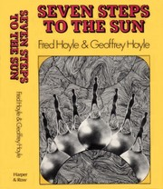
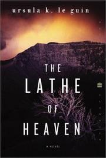
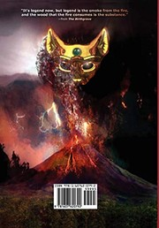
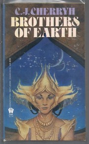
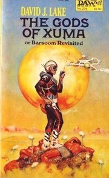
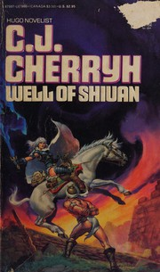

Home
Authors
Decades
Books by Publication Date
Grid
|
List
1970s

Seven Steps to the Sun
BY Fred Hoyle, Geoffrey Hoyle - Pub Year 1971
★★★
More

The Lathe of Heaven
BY Ursula K. Le Guin - Pub Year 1971
★★★★
More
The Sheep Look Up
BY John Brunner - Pub Year 1972
★★★
More
Heritage of the Star
BY Sylvia Engdahl - Pub Year 1973
★★
More
The Dispossessed
BY Ursula K. Le Guin - Pub Year 1974
★★★★
More
The Inverted World
BY Christopher Priest - Pub Year 1974
★★★
More

Birthgrave
(followed by Vasgar, Son of Vasgar , and Quest for the White Witch )
BY Tanith Lee - Pub Year 1975
★★★★
More
Shockwave Rider
BY John Brunner - Pub Year 1975
★★★
More
The Forever War
BY Joe Haldeman - Pub Year 1975
★★★★
More

Brothers of Earth
BY CJ Cherryh - Pub Year 1976
★★★
More
Chain of Chance
BY Stanislaw Lem - Pub Year 1976
★★★
More
Gate of Ivrel
BY CJ Cherryh - Pub Year 1976
★★★★
More
Lizard Music
BY Daniel Pinkwater - Pub Year 1976
★★★★
More
A Scanner Darkly
BY Philip K. Dick - Pub Year 1977
★★★★
More
Hunter of Worlds
BY CJ Cherryh - Pub Year 1977
★★★
More

The Gods of Xuma
BY David J. Lake - Pub Year 1978
★★★
More
The Stand
BY Stephen King - Pub Year 1978
★★★
More

Well of Shiuan
BY CJ Cherryh - Pub Year 1978
★★★★
More
Fires of Azeroth
BY CJ Cherryh - Pub Year 1979
★★★★
More
Mockingbird
BY Walter Tevis - Pub Year 1979
★★★
More
Watchtower
BY Elizabeth A. Lynn - Pub Year 1979
★★★★
More